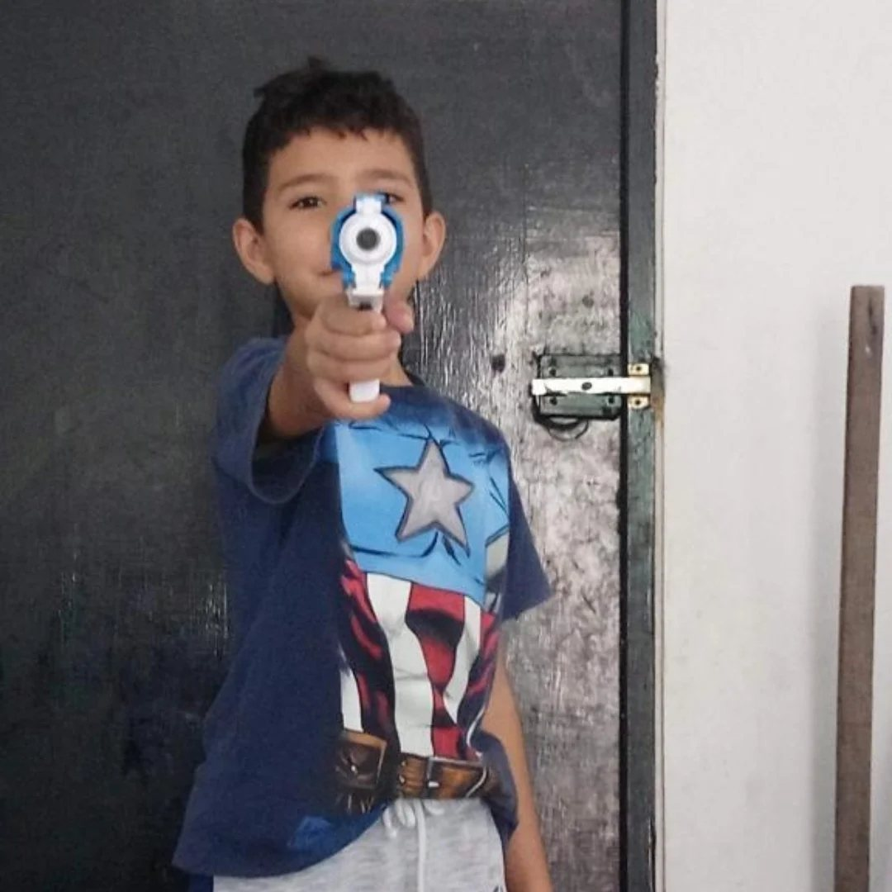
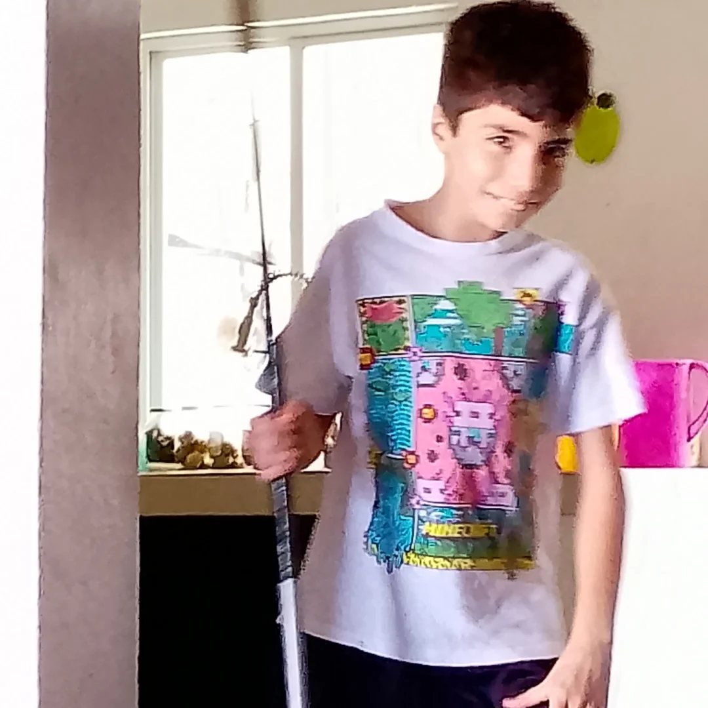
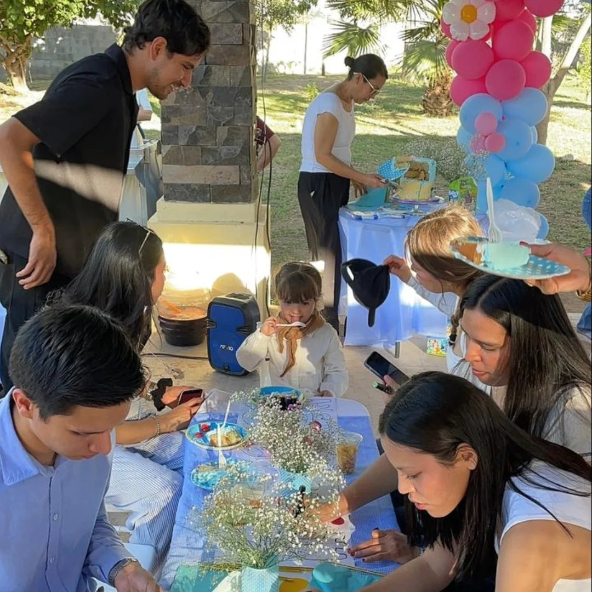
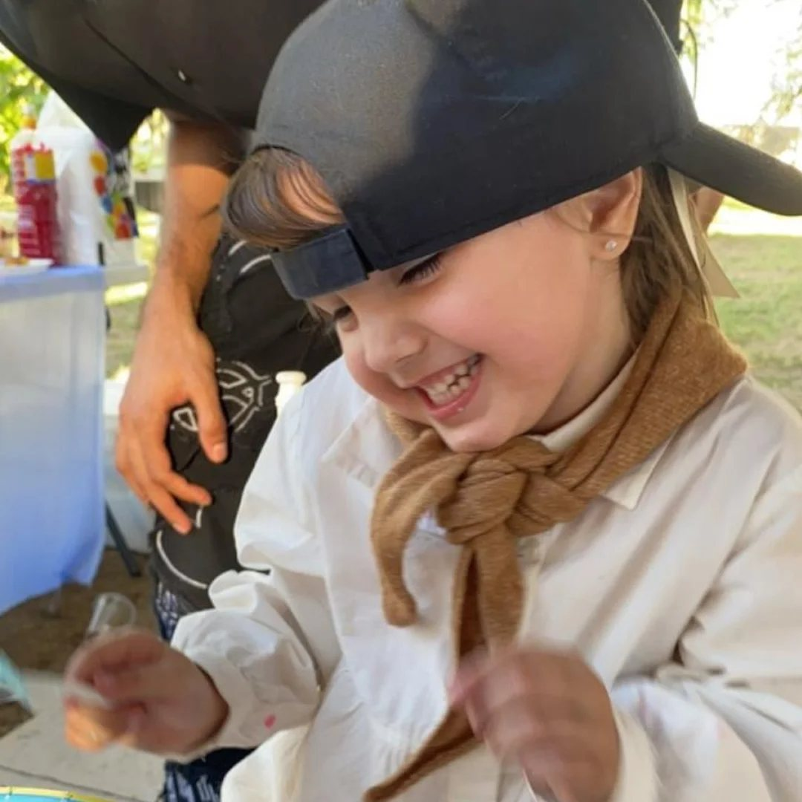

Mi papá
Me enseña con su ejemplo que el esfuerzo diario da resultados.
Juan Carlos Camarena Pillado · CBTis 224 · 5.º semestre de Programación
Mi familia es mi principal apoyo. Gracias a ella puedo estudiar, equivocarme, volver a intentarlo y seguir adelante con mis proyectos.
Me enseña con su ejemplo que el esfuerzo diario da resultados.
Siempre me anima a seguir y me recuerda que puedo lograr lo que me proponga.
Con ellos comparto juegos, bromas y también regaños. Son mis primeros amigos.
Nos reunimos en las fiestas y los fines de semana. Siempre hay historias nuevas que contar.
Es el momento del día en que nos ponemos al corriente de todo lo que pasó.
Terminar el CBTis con buen promedio, estudiar una licenciatura en genómica y hacer que mi familia se sienta orgullosa.




Respeto Responsabilidad Honestidad Esfuerzo Unión
Estos valores me acompañan en la escuela, con mis amigos y en cada proyecto que hago.